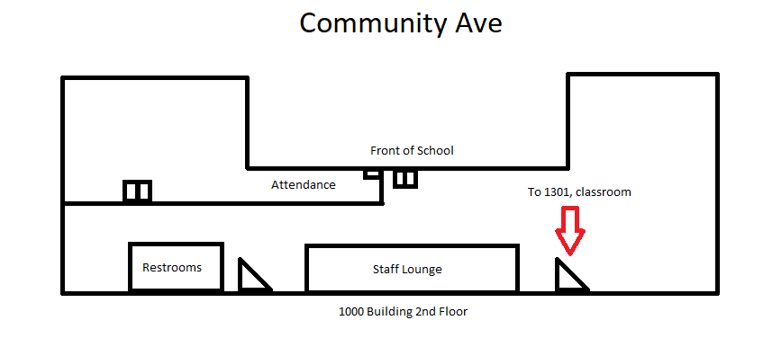
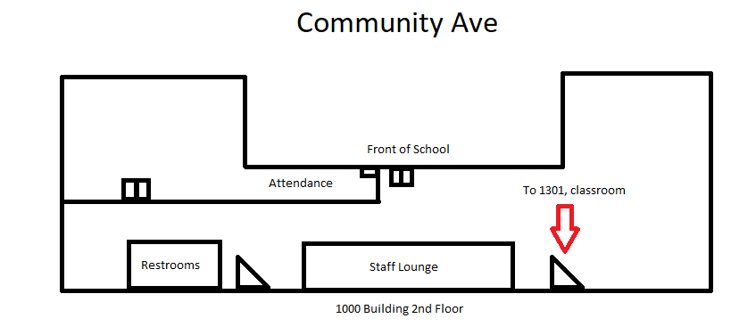

Hello friend! For 12/5/2022. Updated last at: 12:05am - 12/5/2022 https://jacobpoole.net/Sub
Thank you for your help and for substituing for my class!
If you have questions or need me, feel free to email me at jpoole@gusd.net or ask a student to direct message me on Discord.
Attendance
The following are my periods:
Period 1: Honors Software Internship
Period 2: AP Computer Science
Period 3: AP Computer Science
Period 4: AP Computer Science
Lunch
Period 5: AP Computer Science
Period 6: Prep, relax :D
Period 7: Introduction to Engineering
Seating Chart if you need it.
Classwork
Honors Software Internship Agenda:
This class is pretty independent and not much to worry about.
Please have this class help clean up the tables of the engineering projects. There should be a foldable table at the front of the classroom that projects can be set on top of.
1. They can work on their labs
2. They can work on their independent project.
AP Computer Science Agenda:
Majority of classes shouldn't have a problem. Just work on labs today.
1. Work on labs to progress forward.
2. Work on homework that was assigned today.
Intro to Engineering Agenda:
This class does get loud and chaotic at some points.
Students are not working on their physical bridges today!
1. On Google Classroom, I will post an assignment about their bridges.
2. All Students should have their laptops out working on the presentation.
3. Students must work together to put together a presentation about their design process of their bridge.
4. Please note down students who get off task or who aren't working.
Behavior
Hall Pass: Usually I let one student out at a time for the restroom. There's a car that acts as the hall pass that sits next to the tissues at the front of the class. They are also welcome to use the virtual hall pass if the computer is on at the front of the classroom.
Generally, students should be pretty well behaved and should be working on their labs.
Students may be on their phones during class and I'm generally fine with that. If anything, you're welcome to remind them to work on labs to keep pushing forward in content.
References
1. Dr. Greg Neat is in 8102, feel free to call him or ask him for help. He's the other Computer Science teacher.
2. Map of the 1000 building, restrooms shown, staff lounge shown.


3. My parking spot is C52 (Lot behind 2000 building). Feel free to use it.
4. There is a fridge and microwave in the backroom of my classrom that you're free to use!
2. Map of the 1000 building, restrooms shown, staff lounge shown.

3. My parking spot is C52 (Lot behind 2000 building). Feel free to use it.
4. There is a fridge and microwave in the backroom of my classrom that you're free to use!